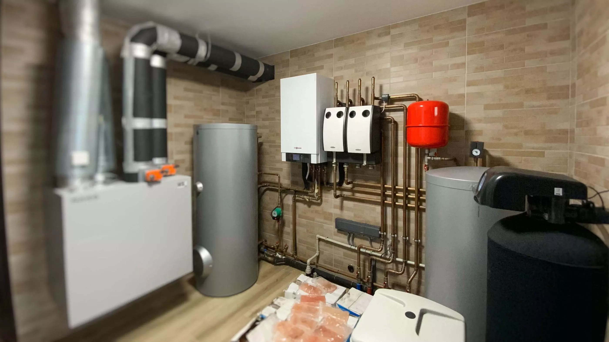
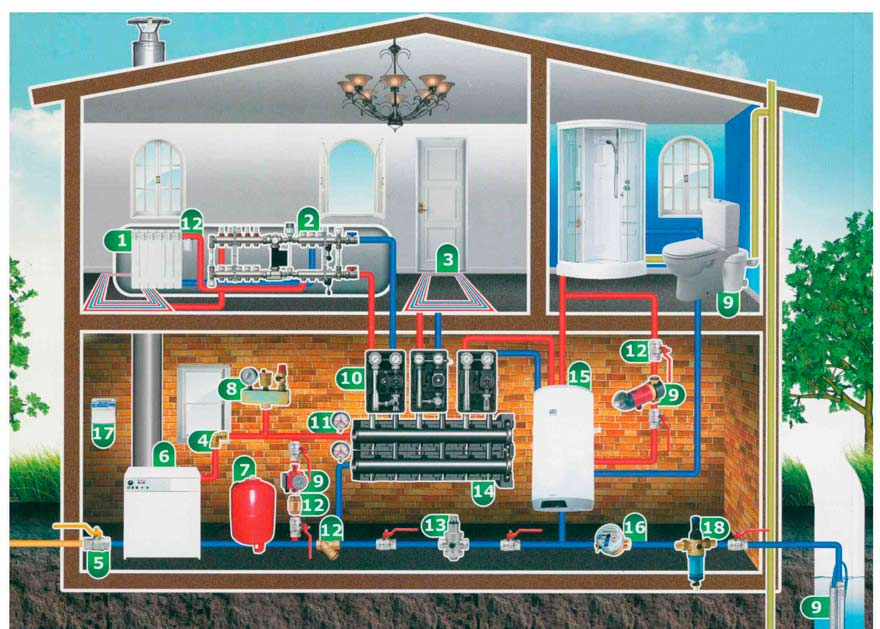
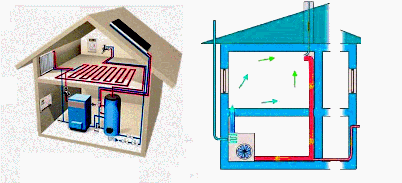

Диагностика систем отопления

В любом доме система отопления – это сложный комплекс, который включает в себя сразу несколько типов
оборудования, а также теплоноситель – воду. В большинстве современных частных домов в него входит:
1 водогрейное оборудование (газовый или твердотопливный котел);
2 трубопровод;
3 циркуляционный насос (у систем принудительного типа циркуляции теплоносителя);
4 запорная арматура (краны, вентили, заглушки);
5 радиаторы (батареи);•теплообменник;
измерительное оборудование;
67 расширительный бак и другие составляющие.
От исправного состояния каждого элемента системы зависит ее работоспособность и, в конечном итоге, тепло и
комфорт в вашем доме. Услуги сантехника хорошей квалификации предполагают возможность провести комплексную
диагностику системы отопления перед началом отопительного сезона, чтобы исключить аварии. Если не сделать
это вовремя, то после запуска теплоносителя ликвидировать последствия порыва трубы или заменить
теплообменник на новый будет значительно сложнее и затратнее. Опытный сантехник в Алматы проведет
комплексную диагностику системы отопления в вашем доме и сможет устранить неисправности на любом участке
системы.

Как и когда проводится проверка системы отопления?
Проверку всех узлов отопительной системы в доме необходимо делать до запуска воды в трубы и
включения водогрейного котла. Самый простой способ это сделать – провести т.н. опрессовку, которая
заключается в подаче в систему воды или воздуха под давлением с помощью гидравлического или
пневматического насоса. Это позволяет выявить нарушения герметичности трубопровода и узлов
соединений труб и устранить их с помощью подходящего метода. Услуги сантехника позволяют провести
оперативные гидравлические испытания системы отопления, чтобы избавить хозяев дома от неприятностей
в дальнейшем. После проведения опрессовки вода или воздух удаляется из системы, и неисправностей в
работе отопления в идеале быть не должно

Какие возникают неисправности в работе отопления?
Но на деле различные неполадки и нарушения правил эксплуатации системы приводят к различным
проблемам в работе отопления. Самый верный показатель того, что в системе что-то не так – сниженная
температура воздуха или холод во всем доме или на отдельном участке (например, в спальне, на кухне
или в гостиной). Основные причины неисправностей такие:
завоздушенность системы, при которой в определенном месте (обычно в области запорной арматуры или
радиатора отопления) возникает воздушная пробка, препятствующая циркуляции теплоносителя;
неполное открытие трубозапорной арматуры на обратной или подающей магистрали;
засоры в стояках, батареях, теплообменнике, насосе или отопительном оборудовании;
неисправности в работе котла, теплообменника или циркуляционного насоса;
перепады давления в трубах и другие проблемы, связанные с гидротермическими факторами.
Воздушные пробки – наиболее часто встречающаяся проблема в работе систем отопления, из-за которых
отдельные помещения в доме отапливаются плохо или вовсе не остаются без обогрева. Обычно
завоздушение возникает по таким причинам:
ошибки в монтаже системы (обратные уклоны магистрали, отсутствие кранов Маевского на радиаторах и
т.п.);
недостаточная наполненность трубопровода водой;
неправильная работа воздухосбрасывающих клапанов;
негерметичность системы (трещины в расширительном баке, неплотные соединения труб);
химические реакции с материалами трубопровода и радиаторов (алюминия) с выделением кислорода и
водорода;
выделение кислорода из воды во время нагревания.
Если воздушные пробки не ликвидируются с помощью кранов Маевского, то убрать воздух из системы можно
с помощью заполнения труб водой при открытом расширительном баке. В дальнейшем на радиаторы
отопления нужно оставить специальные клапаны для автоматического сброса воздуха.